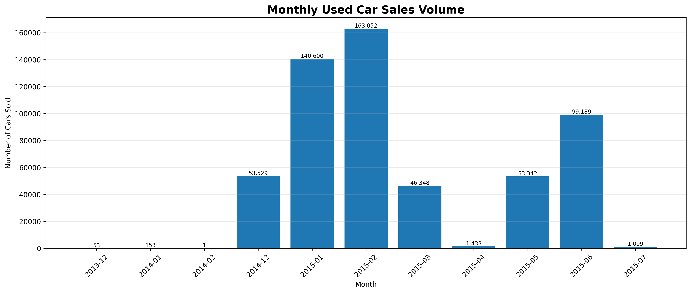
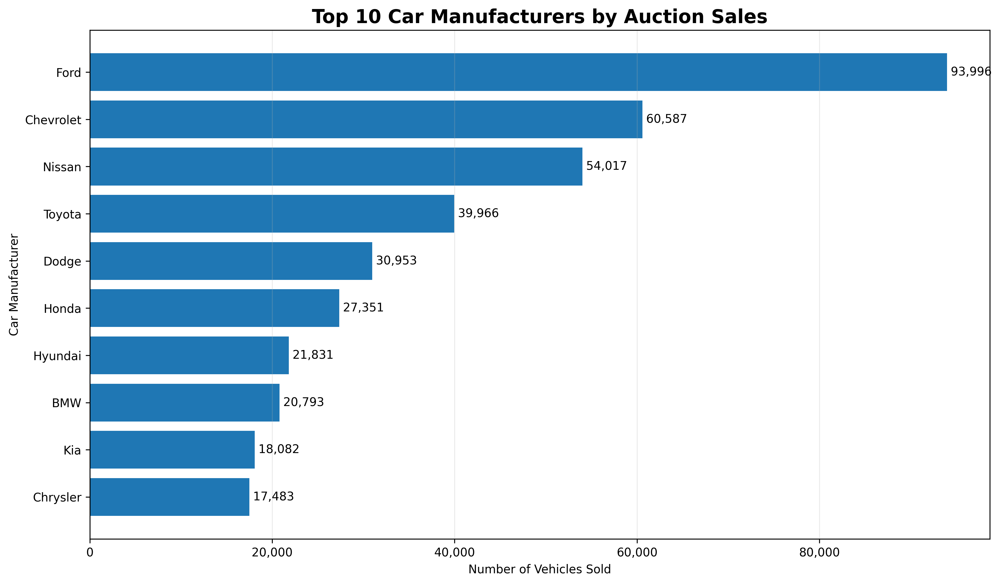
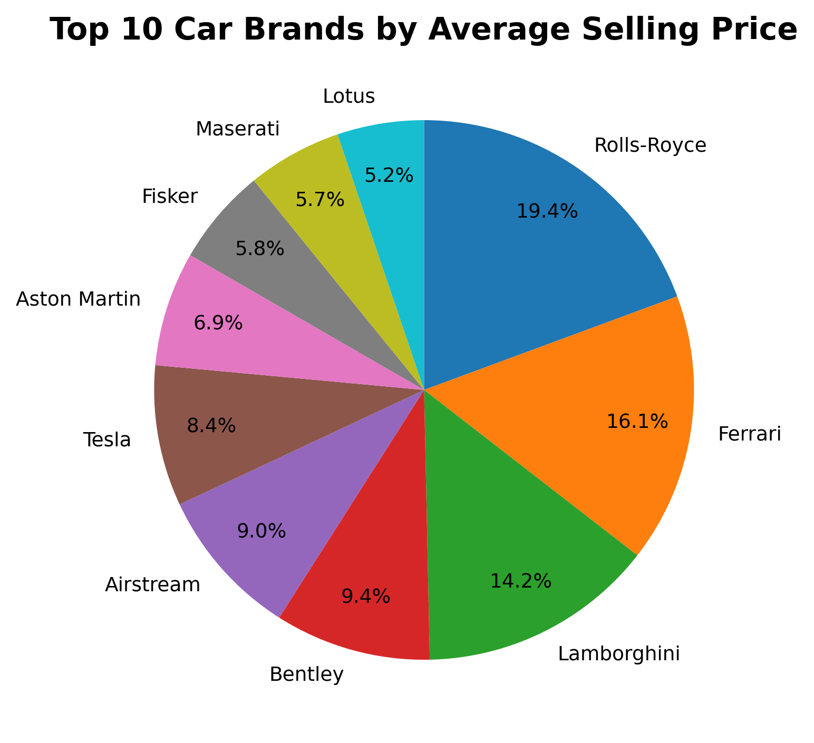
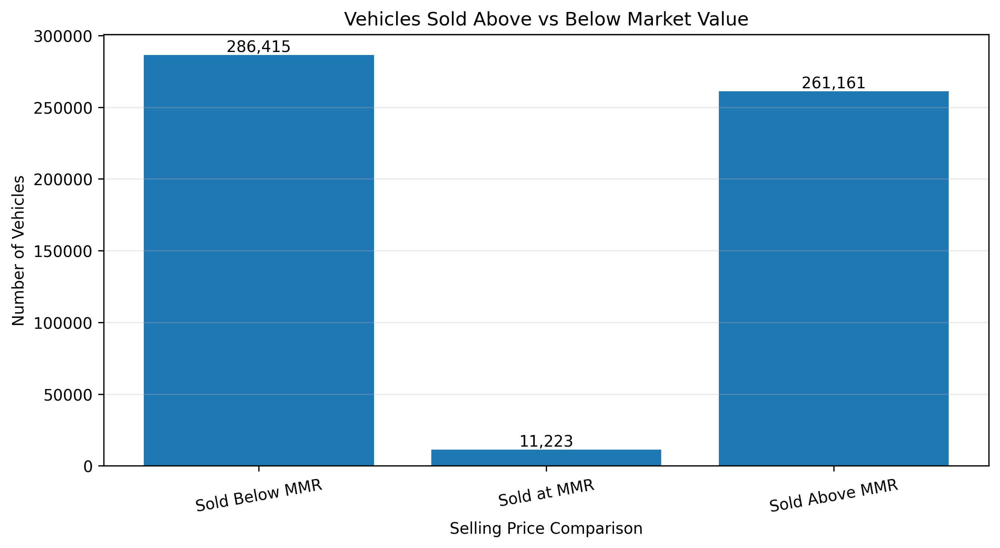
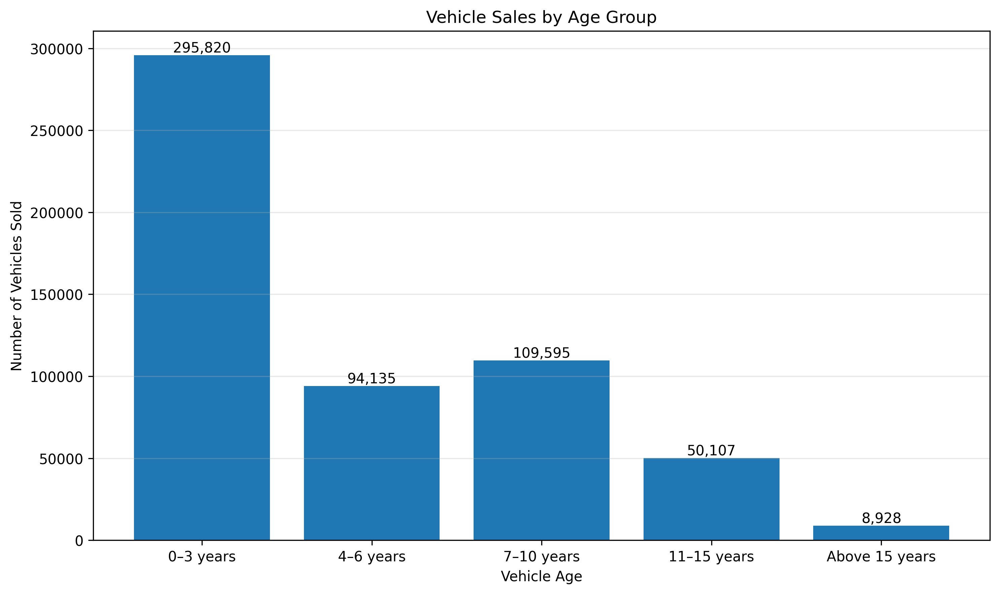
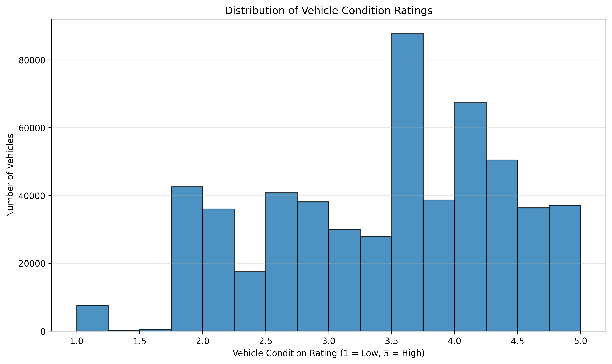
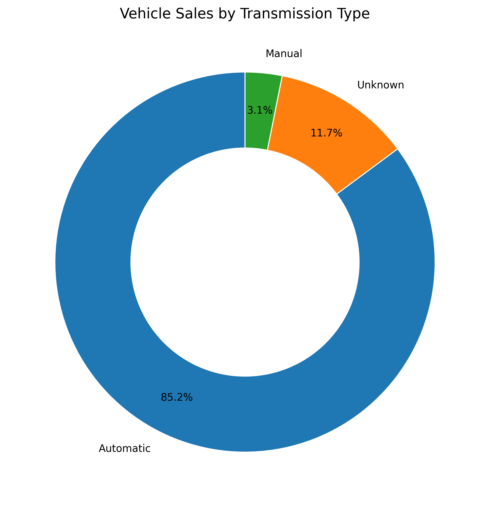

📌 Project Overview
This project analyses historical used car auction data to understand vehicle sales trends, manufacturer performance, selling price patterns, vehicle age, condition and transmission categories.
558,837
Original dataset records
16
Original dataset columns
7
Data visualisations
2013–2015
Historical data period
🛠️ Technologies Used
📂 Dataset & Methodology
The dataset contains historical US used-car auction records with vehicle details, manufacturer, model, condition, odometer reading, MMR and actual selling price.
Analysis workflow
- Data inspection and cleaning
- Missing-value handling and duplicate checking
- Data type conversion and transformation
- Historical USD-to-INR conversion using exchange rates
- Exploratory data analysis
- Visualisation and business interpretation
📊 Data Visualisations
Explore the seven charts generated using Matplotlib.

01. Monthly Vehicle Sales
Examines the monthly distribution of auction sales.

02. Top 10 Manufacturers
Compares manufacturers by auction sales volume.

03. Top Brands by Average Selling Price
Compares average selling prices among selected brands.

04. Selling Price vs MMR
Compares auction selling prices with the MMR reference value.

05. Vehicle Sales by Age Group
Explores auction sales across vehicle age categories.

06. Vehicle Condition Distribution
Displays the distribution of recorded vehicle condition ratings.

07. Transmission Type Distribution
Compares automatic, manual and unknown transmission categories.
💡 Business Insights
- Identify manufacturers with higher auction sales volumes.
- Compare average selling prices across vehicle brands.
- Understand how auction prices compare with MMR reference values.
- Explore how vehicle age relates to auction sales distribution.
- Examine vehicle condition and transmission patterns.
- Use historical sales patterns to support inventory and pricing analysis.
🎯 Conclusion
This project demonstrates how Python-based data analytics can transform raw auction records into meaningful visualisations and business insights. It provides a foundation for understanding historical used-car auction activity and pricing patterns.
Note: The dataset covers historical US auction activity from 2013–2015. INR conversions are historical equivalents and do not represent current Indian market prices. MMR is a market reference value, not a vehicle acquisition cost or profit measure.
👨💻 Project & Source Code
Krishna Prasath
Data Analytics | Python | SQL | Pandas | NumPy | Matplotlib
View GitHub Repository Open Notebook in Google Colab